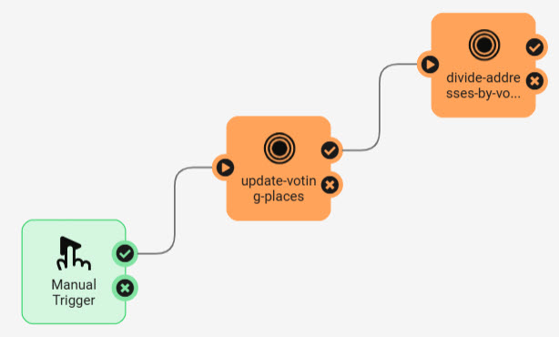
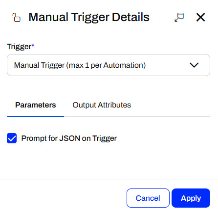
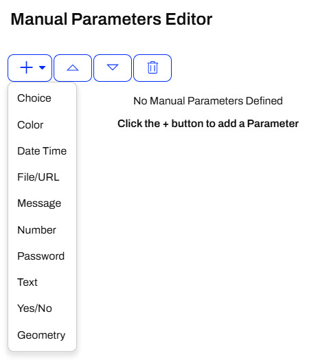
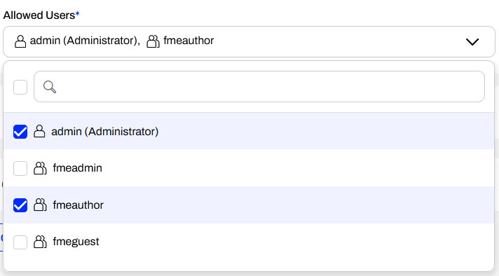
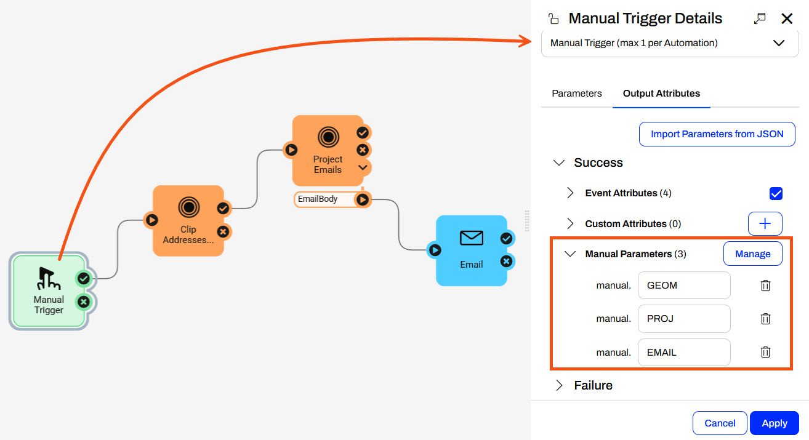
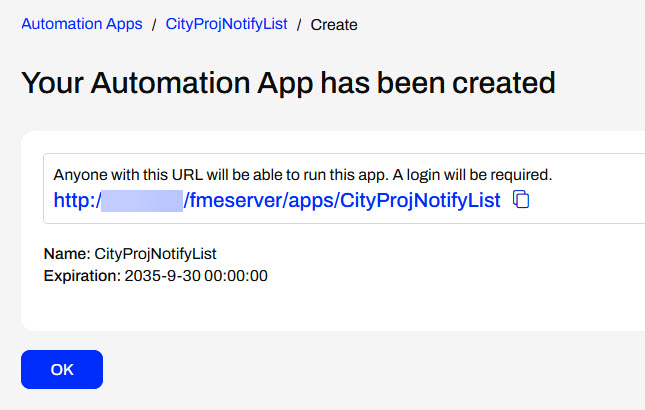
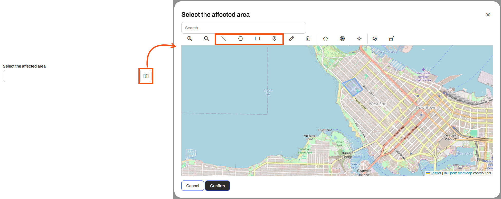
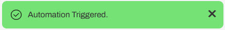
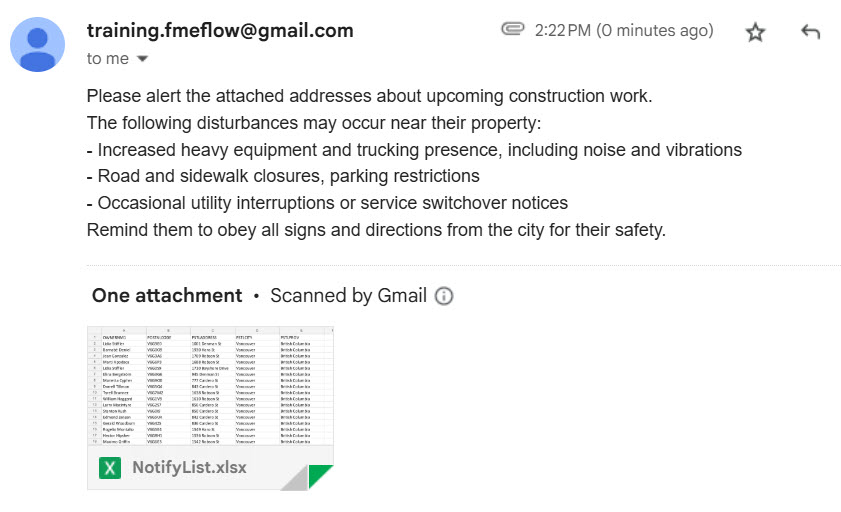

Learning Objectives
After completing this lesson, you'll be able to:
- Create an Automation App to trigger and run an Automation.
- Understand the requirements to use an Automation in an Automation App.
- Understand how FME Flow takes input from Automation Apps to Automations.
Resources
- Starting FME Flow project | C:\FMEData\Workspaces\CreateDataIntegrationApps\create-data-integration-apps--starting-project.fsproject
If you're taking a live Safe Software-hosted training course or using an on-demand lab for this course, we've already imported the content for this lesson into your FME Flow.
If you're completing this lesson with your own FME Flow, you must import the starting project with the content into your FME Flow.
Expand for Steps to Import the Starting Project
2) Upload the
create_data_integration_apps.jceks encryption key to your FME Flow. This must be done by an fmesuperuser who has permission to System Configuration > Security > System Encryption. For more information, see our documentation on
System Encryption.
3) Navigate to your FME Flow and open Projects. Click Import.
5) The first step is Preview Content, where you may choose not to overwrite existing items. If all your items are New Items, you don't need to worry about overwriting existing items. Click Continue.
6) The next step is to select connections and tokens to import. This project doesn't contain any connections, parameters, tokens, or users to import. Click Continue through Step 2 and Step 3. Click Import Project on Step 4. The project will import and display its import status from the same page.
If the project import failed, check that you uploaded the encryption key and repeat the process. If the issue persists, please contact us at train@safe.com.
Automations
An Automation is a workflow that reacts to an event (a trigger) and then performs one or more actions. Triggers respond to events such as updated files, webhooks, or scheduled times and send a message to trigger downstream actions to run. Actions often include running one or more FME workspaces, sending emails, writing files, or branching based on results. You connect these steps on a canvas so the process runs the same way every time.


This course focuses specifically on Flow Apps. For more training on Automations, see the Automate Workflows with FME Flow learning path.
Automation Apps
Automation Apps allow you to trigger an Automation to run through an app. Like other Flow Apps, you access and share Automation Apps with URLs that FME Flow generates once you build your app. By sharing app URLs, users may access FME Automations functionality through a simple form without requiring any FME knowledge or expertise. You fill in the parameters to input into the Automation and click Run. FME Flow will display a message on the app page if the Automation is successfully triggered.

To create an Automation App, you fill out a form setting details for the app and select the Automation you wish to run from the app.

Like Workspace Apps, once you select an Automation, the Parameters section appears where you may configure any default values for the app. You also have the same customization options, where you may tailor your app to your organization's branding with colors, logos, banners, and images.

You click Create to finalize the creation of your app, and FME Flow generates a URL that allows you to access it. If you need to make edits to your app, you can always return to Manage Automation Apps and select your app to edit it.

Manual Triggers and Parameters
To use an Automation in an Automation App, your Automation must use a Manual Trigger. Manual Triggers do not respond to external events; instead, they trigger Automations on demand. Automation Apps send messages to Manual Triggers to kick off the Automation.

The only Parameter to configure for a Manual Trigger is the Prompt for JSON on Trigger option. This option allows you to enter JSON input into Automation when you manually trigger it from the Automations canvas. It is usually unnecessary for Automations you plan to trigger through Automation Apps.

Manual Triggers have unique Output Attributes called Manual Parameters. Manual Parameters are customizable attributes that you create to take input into your Automation. To add and edit Manual Parameters for an Automation, you must open the Manual Trigger Details. In the Output Attributes tab, you'll see Manual Parameters nested under Success.

You click Manage to open the Manual Parameters Editor, where you create Manual Parameters. Like User Parameters, there are many options for different types of input to your Automation, depending on your workflow.

The Manual Parameters Editor displays the list of parameters on the left side and the properties for individual parameters on the right.

When you create an Automation App, these parameters are displayed on the app's web page for users to enter their values.

To use the input values in your Automation, you reference Manual Parameters in downstream actions like any other Output Attributes and Automation Parameters. All Manual Parameters begin with the prefix manual.

Automation App Permissions
Automation App permissions work differently from other Flow Apps. Due to the complexity of Automations, app users must log into FME Flow to run an Automation App to trigger an Automation. When you build your Automation App, you select which users and roles on your FME Flow to give access to your app.

When you create an Automation App, FME Flow generates a security token along with the URL. The token allows authorized FME Flow users to run the Automation and configure parameters with the URL.
For more information on user permissions in FME Flow, see Role and User-based Access Control.
Exercise

Sven, a planning analyst for a local government, is developing a workflow that sends alerts about addresses affected by various infrastructure and planning projects. He has an FME Flow Automation that runs two workspaces. The first workspace clips residential address locations to an input geometry area, and the second workspace configures a notification based on the project type. It then sends an email with a list of addresses and some information about the disruption. Sven fills out the parameters and then manually triggers the Automation on the FME Flow. Now, Sven is going to create an Automation App using his Automation so he can easily trigger it without having to navigate to the Automation on FME Flow and allow his colleagues to use it.
Follow along with Sven's steps as he creates an Automation App for his workflow.
1) Review Automation
Sven navigates to FME Flow and opens the Manage Automations page. He clicks the City Project Notifications Automation to open it.

The Automation runs two workspaces, sends an email, and begins with a manual trigger. Sven has already created some manual parameters to take input from the user in the Automation App. To view the Manual Parameters, Sven clicks the Manual Trigger icon to open the Details, then clicks Output Attributes and expands the Success and Manual Parameters sections.

Sven clicks Cancel to close the Manual Trigger Details and starts the Automation.

Once the Automation starts, a message displays that it is running.

2) Create Automation App
With his Automation running, Sven expands Flow Apps and selects Create Automation App. He fills out a Name, Title, and Description for the app. For the Automation, Sven selects City Project Notifications.

Sven leaves the Expiration, and uses the drop-down to add the fmeauthor role to the Allowed Users. His colleagues in the fmeauthor role will be able to access and run his Automation App.
Sven expands the Parameters section. These are the Manual Parameters from the Automation that take input from the app to the Automation. He does not set any defaults and collapses the section.

Sven scrolls to the bottom of the page and clicks Create to create his app.

3) Open Automation App

After creating the app, FME Flow presents Sven with the app URL, which he can copy to share or click to open. He clicks the URL to open it in a new tab.

4) Run Automation App
Sven clicks the map icon to open the web map to set the geometry for the affected area. He selects the geometry shape he wishes to define and then draws the feature on the map. He clicks Confirm to close the map.

He selects the project type and enters his email to receive the list of addresses to notify.

Once he sets his parameters, he clicks Run to trigger the Automation. FME Flow displays a message that it has triggered the Automation.

Sven waits a moment and then checks his email for the message containing the list of addresses to notify.

Sven has successfully built an Automation App to take user input and trigger an FME Flow Automation to run. His app triggers the Automation to run two workspaces and send an email with data queried from the input parameters set by the app user.